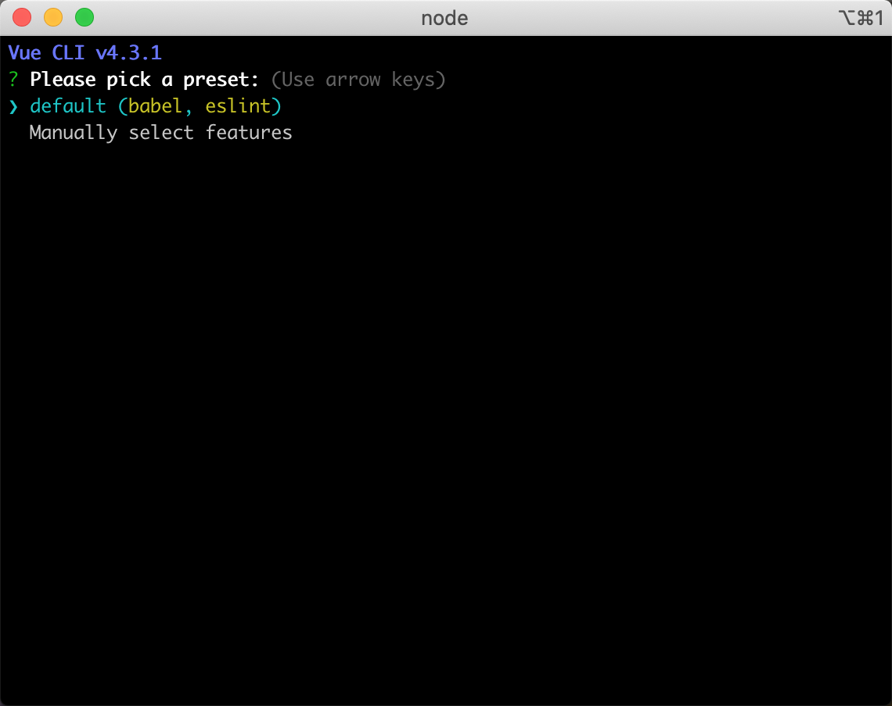
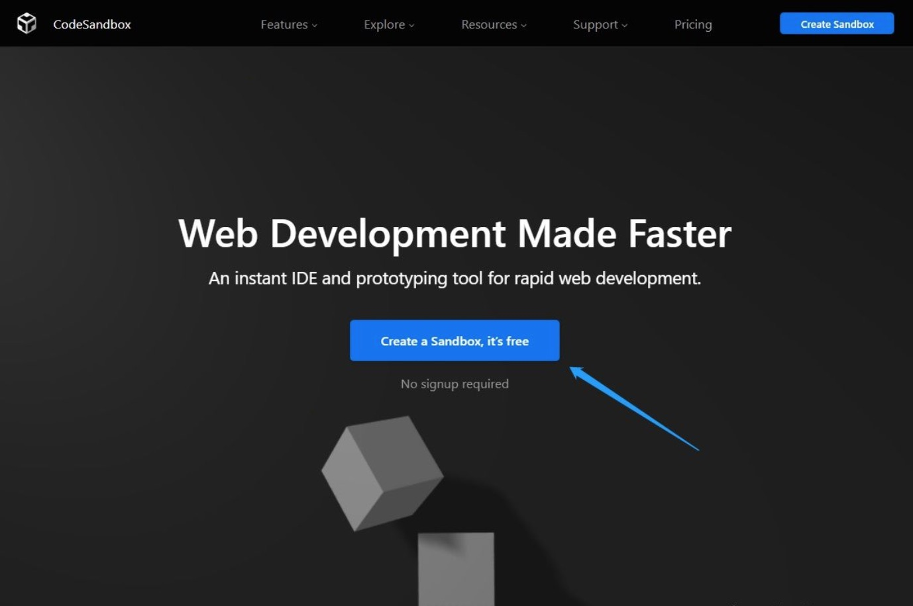
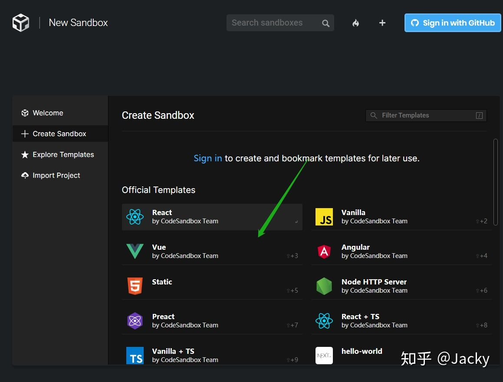

POSTS
Vue入门
@vue/cli
安装
npm install -g @vue/cli # OR yarn global add @vue/cli查看Vue的版本
vue -V用@vue/cli创建一个项目
vue create vue-demo在vue项目创建之后，系统会要求用户配置项目，你可以通过默认的present，也可以手动选择

vue的两个版本的区别
vue有完整版和只包含运行时版
完整版 vue.js
只包含运行时版 vue.runtime.js 单
两个版本的区别如下:
| 完整版 | 只包含运行时版 | |
|---|---|---|
| 特点 | 有编译器 | 没有编译器 |
| 视图 | 写入HTML或写入template完成 | 通过render函数的h方法 |
| cdn引入 | vue.js | vue.runtime.js |
| webpack引入 | 需要配置alias | 默认使用此版 |
| @vue/cil引入 | 需要额外配置 | 默认使用此版 |
最佳方式:总是使用非完整版，然后配合vue-loader和vue文件
思路:
- 保证用户体验，用户下载的js文件可以更小，但只支持h函数
- 保证开发体验，开发者可以直接在Vue文件里写HTML标签，而不写h函数
- 工作让loader做，vue-loader把vue文件里的HTML转为h函数
vue的三个实例
完整版
new Vue({ el:'#app', template:'<div>{{n}}</div> })只包含运行时版
new Vue({ el:'#app', render(h){ return h('div','apple') } })
使用codesandbox
使用方法
打开codesandbox

选择vue

开始写代码(默认只包含运行时版)